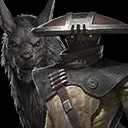
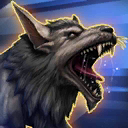
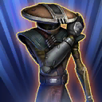
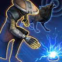
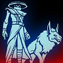
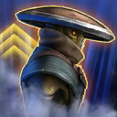

Embo & Keibu
Elusive bounty hunter whose bond with his anooba makes them deadly in tandem

Elusive bounty hunter whose bond with his anooba makes them deadly in tandem

Deal Physical damage and inflict 2 stacks of Bleed (max 6) on target enemy until end of the encounter, which can't be resisted. If the enemy did not have any buffs, remove 20% Turn Meter from them and Embo & Keibu gain that much.
If all allies are Bounty Hunter Mercenaries: Dispel debuffs from all allies and on Embo & Keibu's turn, if target enemy is inflicted with Bleed, a random other Attacker ally gains a bonus turn

Deal Physical damage to target enemy 3 times. If this attack is evaded, target enemy loses 20% Health (excluding Galactic Legends and Raid Bosses). If the target enemy is a Tank, this ability has +200% Health Steal. Otherwise, it has +100% Defense Penetration. Bounty Hunter Mercenary allies gain 50% Offense (stacking) for 2 turns.
If target enemy had no buffs, a random Bounty Hunter Mercenary Support ally gains a bonus turn.

Dispel all buffs on target enemy and deal Physical damage to them. Embo & Keibu gain Critical Damage Up for 2 turns.
If there is an active Embo & Keibu's Captive or Tortured enemy, a random Bounty Hunter Mercenary Tank ally gains a bonus turn.
If all allies are Bounty Hunter Mercenaries:
- Inflict Captive on target enemy (excluding Galactic Legends) until the start of Embo & Keibu's next turn, which can't be dispelled, evaded, or resisted
- Inflict a stack of Ambush on the strongest enemy if they don't already have Ambush or Ambushed until the start of Embo & Keibu's next turn, which can't be dispelled, evaded, or resisted.
Ambush: -50 Speed (max -50); gain an additional stack upon receiving damage; at 6 stacks, lose all stacks of Ambush and gain Ambushed until the end of the encounter
Ambushed: -50 Speed (max -50); Protection is disabled, immune to Protection Up and bonus Protection, this effect persists through defeat
Omicron Boost : While in Territory Battles: Bounty Hunter Mercenary allies take reduced damage from Percentage Health damage effects and gain 30% Max Protection (stacking) until end of battle and recover 75% Health and Protection.

Bounty Hunter Mercenary allies have +100% Defense Penetration and Max Health. If 3 enemies take consecutive turns before any ally has taken a turn, a random other Bounty Hunter Mercenary non-Tank ally gains a bonus turn. After every 2 bonus turns gained by other allies, Embo & Keibu gain a bonus turn.
Whenever a Bounty Hunter Mercenary ally takes a bonus turn, their cooldowns are reduced by 1 and whenever they use an ability on that turn, they Stun the target enemy for 1 turn and they deal an additional instance of damage to target enemy for each bonus turn that ally has gained (max 4), which can't be evaded.
While an enemy is inflicted with Embo & Keibu's Captive, Bounty Hunter Mercenary allies gain Ransom until end of battle whenever the following happens, which can't be copied, dispelled, or prevented:
- Gain 2 stacks whenever an enemy gains a dispellable buff
- Gain 2 stacks whenever an enemy dispels a debuff
- Gain 1 stack whenever an enemy attacks out of turn
Whenever Embo & Keibu inflict Captive, if they gain 30 stacks of Ransom before their next turn: At the start of their turn, Embo & Keibu remove their Captive from all enemies and the enemy who had Captive is Exposed for 1 turn. Otherwise, the Captive enemy is inflicted with Torture for the rest of the encounter, which can't be dispelled, evaded, or resisted.
Tortured enemies are immune to Captive.
When Embo & Keibu are in the Leader slot and not the ally slot, the following Contract is active:
Contract: Deal damage to enemies while buffed 20 times.
Reward: Embo & Keibu gain the Granted Ability Smoke and Shadow.
Smoke and Shadow: Stealth for 1 turn. While this Stealth is active, Embo & Keibu and the weakest Bounty Hunter Mercenary non-Tank ally recover 15% Health and Protection at the start of each enemy's turn. When this Stealth expires, reduce the Offense of all enemies who damaged Bounty Hunter Mercenary allies by 30% for 2 turns.
Omicron Boost : While in Grand Arenes : Bounty Hunter Mercenary allies gain 200 Speed for 1 turn and Bounty Hunter's Resolve until the end of battle.

Stealth for 1 turn. While this Stealth is active, Embo & Keibu and the weakest Bounty Hunter Mercenary non-Tank ally recover 15% Health and Protection at the start of each enemy's turn. When this Stealth expires, reduce the Offense of all enemies who damaged Bounty Hunter Mercenary allies by 30% for 2 turns.
When Embo & Keibu receive a Reward from a Contract, they also gain the following Payout. (Contracts are granted by certain Bounty Hunter Leader abilities.)
Embo & Keibu's Payout: Bounty Hunter Mercenary allies gain 50% Critical Damage until the end of battle. Embo & Keibu gain 10 Speed (stacking, max 100) whenever they resist a debuff until the end of battle.
At the start of battle, Embo & Keibu gain 2 stacks of Soldier of Fortune per Relic Amplifier level they have.
Whenever a buff is dispelled on an enemy, Embo & Keibu gain 7 stacks of Soldier of Fortune.
At the start of each Bounty Hunter Mercenary ally's turn, they have +2% Offense for each Soldier of Fortune stack on Embo & Keibu until the end of that turn.
Whenever Embo & Keibu receive damage from an enemy, if they have more than 10 stacks of Soldier of Fortune, they lose 10 stacks of Soldier of Fortune, the weakest Bounty Hunter Mercenary non-Tank ally recovers 20% Protection, and Embo & Keibu gain 50% Critical Damage (stacking) for 2 turns.
Omicron Boost : While in Territory Wars: When a Bounty Hunter Mercenary ally receives damage for the first time, they gain Damage Immunity for 2 turns, which can't be dispelled or prevented and Embo & Keibu gain 25 stacks of Soldier of Fortune.
This character can't be used in the ally slot or with another large character and summons are prevented for allies.